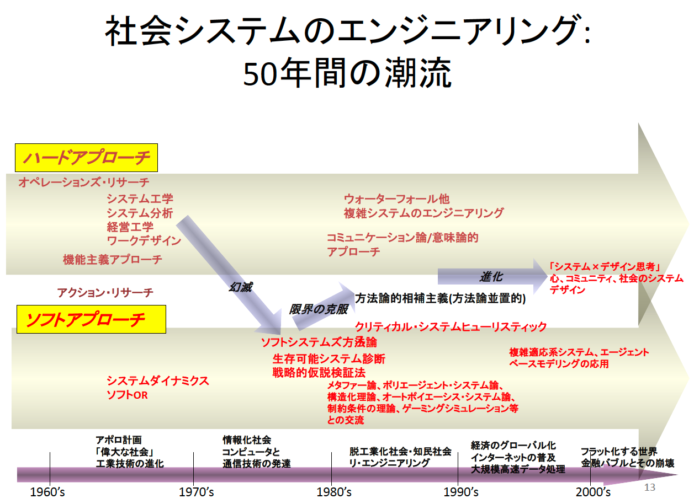
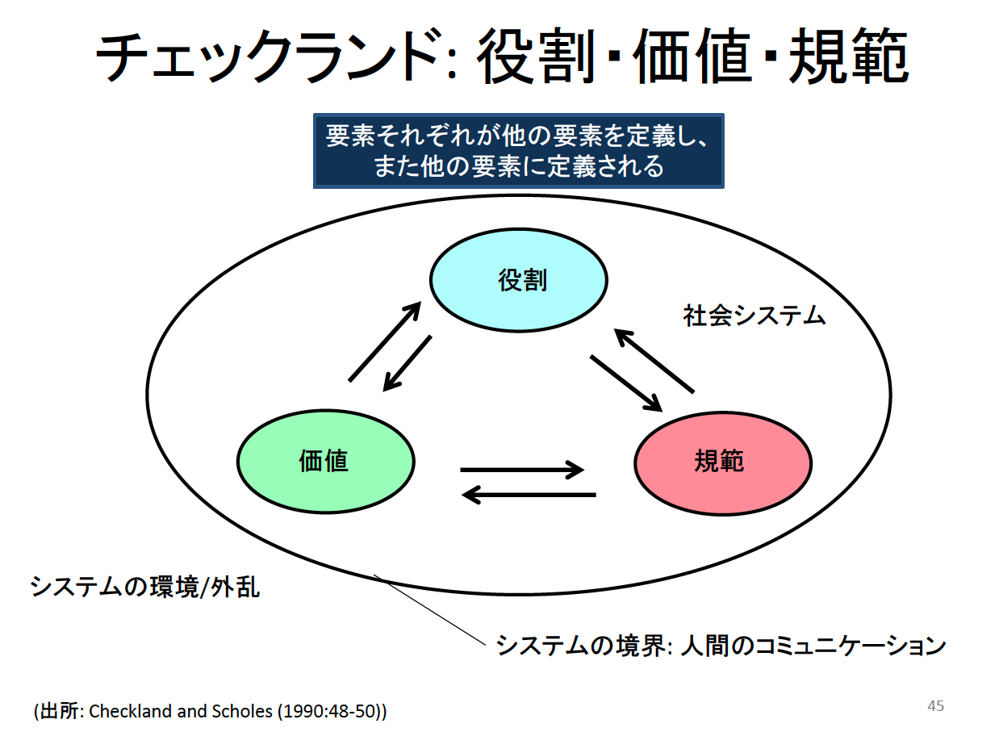

SSMは、関係者のあいだで「何が問題か／成功か／どこまで扱うか」が割れている状況（problem situation）を、対話とモデル化で“扱える形”にしていく方法論。
このメモは、2024年末の講義をきっかけに「仕事で直面している課題は『解く』以前に『何を問題とみなすか』を揃える必要がある」と感じたことを出発点に、SSMの要点を勉強会向けに整理したもの。
「ハード」と「ソフト」は対立概念というより、局面に応じて接続して使うものだと捉える方が実務的。社会と技術の変化に合わせて、それぞれの方法論が限界を経験し、補完しながら進化してきた「系譜」として見ると理解しやすい。
【図1：ハード／ソフトの系譜（1960s〜2000s）】

図1：ハード／ソフトは優劣ではなく、対象と局面（定義→設計→実装）で使い分け、接続していく関係として理解できる。
組織の問題が難しくなるのは、手段不足よりも役割・価値・規範のズレが循環的に再生産されるため。SSMはこのズレを「厄介もの」ではなく、構造化して扱う。
【図2：役割・価値・規範の相互規定（社会システム）】

図2：役割・価値・規範は互いを定義し、互いに定義される。外部環境／外乱の影響を受けつつ、境界（人間のコミュニケーション）を通じて社会システムとして維持・変化する。
SSMの肝は「現実世界」と「システム思考」を往復して学ぶことにある。現実をそのままモデル化するのではなく、目的を持つ“仮想の活動システム”を一度組み立て（概念モデル）、現実との差分から改善案を引き出す。
CATWOEは、根底定義（活動システムの定義）を詰めるための問いのセット。
（図2との接続）
シェル社の製造機能部門（MF）のリオリエンテーション（再定位）事例である。ここでは「組織改編の結果」よりも、専門職集団が「自分たちは何を提供するのか」を再定義する過程が中心として描かれていた。
 *図3：シェル社MF事例（書籍の図）。専門職集団が「自分たちは何を提供するのか」を再定義していくプロセスとして読む。*
*図3：シェル社MF事例（書籍の図）。専門職集団が「自分たちは何を提供するのか」を再定義していくプロセスとして読む。*
現在、仕事では自社の業務全体（販売、物流、購買、会計、プロジェクトデリバリ等）をグローバルで標準化し、情報システムを刷新するプロジェクトに関わっている。業務領域や拠点（日本本社／海外拠点）の状況、利害が異なるため、次のような「割れ」が起きやすい。
結果として、納期圧が強い局面では、短期的に前に進む案（拠点固有業務を無視した設計、領域間のつながりを十分に考慮しない設計）に寄りやすい。SSMの観点では、こうした状況は「解く」以前に問題状況を構造化し、合意可能な変化（accommodation）をつくる必要がある局面だと捉えられる。SSMは、そのためのステップを明示している。